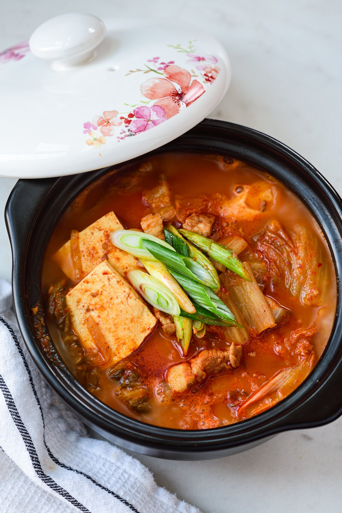

Kimchi Soup

Traditional Korean soup dish using kimchi, the more fermented the better!
Ingredients
- 2 cups packed bite size kimchi fully fermented
- 4 ounces fresh pork belly or other pork meat with some fat or other protein choice
- 1 to 3 teaspoons gochugaru (Korean red chili pepper flakes) adjust to taste or omit
- 1 teaspoon minced garlic
- 1 tablespoon cooking oil
- 1/2 cup juice from kimchi if available
- 6 ounces tofu
- 2 scallions
- salt (or a little bit of soup soy sauce or regular soy sauce) and pepper to taste
Steps
- Cut the kimchi into bite size pieces
- Cut the meat into bite sizes. Slice the tofu (about 1/2-inch thick), and roughly chop the scallions
- Heat a small to medium pot with 1 tablespoon of oil. Add the kimchi, pork, red pepper flakes and garlic and cook over medium high heat until the kimchi is softened and the pork cooks through, about 5 to 7 minutes

- Add the kimchi juice and about 2 to 2.5 cups of water (or broth). Bring it to a boil, and continue cooking for 5 minutes. Then, reduce the heat to medium, and boil, covered, for about 15 minutes. You can add more water if necessary

- Drop the tofu and scallions in. Salt (or soup or regular soy sauce) and pepper to taste. (Salt is usually not necessary, unless kimchi was lightly seasoned or kimchi juice is not available.) Boil until the tofu is cooked through, about 5 minutes. Serve while bubbling over from the heat.

Tips
- Use old, sour kimchi.
- Cook the kimchi and pork together before adding the liquid. This step develops extra flavor.
- Use the water used to rinse rice (ssalddeumul, 쌀뜨물) as the stew base. It's commonly used for Korean stews. Use the water from the second or third round of rinsing. The rice water thickens the broth slightly and enhances the flavor.
- Anchovy broth, chicken broth, milky bone broth or vegetable broth will also be great as a soup base.
- Use the juice from the kimchi if available. It will add lots of flavor to the broth.
Full Recipe here